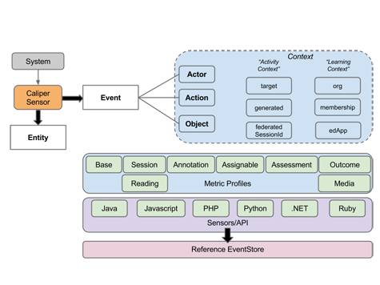

Caliper Analytics®
| Member Resources | Public Documents | Background |
Summary
- Student recruitment and retention plans
- Program, curriculum, and course design
- Student intervention measures
Caliper Profiles
Caliper defines a number of metric profiles, each of which models a learning activity or a supporting activity that helps facilitate learning. Each profile provides a domain-specific set of terms and concepts that application designers and developers can draw upon to describe common user interactions in a consistent manner using a shared vocabulary. Annotating a reading, playing a video, taking a test, or grading an assignment submission represent a few examples of the many activities or events that Caliper's metric profiles attempt to describe. The Caliper 1.1 profiles include:
- Annotation Profile
- Assessment Profile
- Assignable Profile
- Forum Profile
- Grading Profile
- Media Profile
- Reading Profile
- Session Profile
- Tool Use Profile
- Basic Profile
Learn More about Caliper Profiles
Are Your Products IMS Global Certified?
Member Resources (login required)
IMS conformance certification for Caliper Analytics is available for Contributing and Affiliate-level members. IMS Global offers its member organizations a certification service for testing applications that emit Caliper messages over HTTP. Each Metric Profile defined in the Caliper Analytics specification serves as a unit of certification. Edtech suppliers may certify their products for one, some, or all relevant Metric Profiles. End users should consult the IMS Certified Product Directory to see the current list of products that have achieved Caliper conformance certification.
Member Draft Documents
- Tool Launch Profile v1.1 (Base Document, Member Draft)
- Search Profile v1.1 (Base Document, Member Draft)
Public Documents
- Caliper Analytics v1.1 Introduction
- Caliper Analytics v1.1 User Scenarios
- Caliper Analytics v1.1 Profiles
- Caliper Analytics v1.1 Profiles—Detailed Descriptions
- Caliper Analytics v1.1: How to Certify
Current Version Specification Documents
- Caliper Analytics v1.1 Final Specification
- Caliper Analytics v1.1 Sensor Certification Guide
- Sensor APIs v1.1
Previous Version Specification Documents
- Caliper Analytics v1 Best Practice Guide
- Caliper Analytics v1 Implementation Guide
- Caliper Analytics v1 Conformance Guide
- Sensor APIs
Caliper Analytics® Background
A growing number of learning interactions take place online, which allows for data and information specific to the learning activity to be captured. This data promises to deliver new insights into how particular learning interactions relate to learning outcomes. Using this data, educators can:
- Answer those seeking more accountability with measures of learning activity in addition to learning outcomes
- See which behaviors and content consistently produce the desired learning outcomes
- Compare the effectiveness of different content or interaction types
- Arm early warning systems and establish predictive measures
- Personalize curriculum in real time based on student patterns
The potential of learning analytics to innovate and shape education are found in the widespread collection and display of the data by online learning environments and other learner activity data collected by many institutions. All efforts to date have been built around proprietary standards that reinforce the silos often found in education. This makes it nearly impossible for the educator, student or institution to see a truly holistic view of what is happening in the teaching and learning environment. Not only does each organization need to reinvent the analytics wheel, but the current analytic conditions means the resulting analytics cannot be compared effectively. Each organization counts different things in different ways.
Since many curriculums ask students to work in multiple learning environments, there is a widespread need for data, that can be consolidated for a single view or cross-provider analysis.
The Caliper Framework will:
- Establish a means for consistently capturing and presenting measures of learning activity, which will enable more efficient development of learning analytics features in learning environments
- Define a common language for labeling learning data, which will set the stage for an ecosystem of higher-order applications of learning analytics
- Provide a standard way of measuring learning activities and effectiveness, which will enable designers and providers of curriculum to measure, compare and improve the quality
- Leverage data science methods, standards, and technologies
- Build upon existing IMS Global open standards
- Provide best practice recommendations for transport mechanisms
Caliper Analytics Current Status
IMS Global has developed a standard that:
- Creates learning Metric Profiles to establish a basic and extensible common format for presenting learning activity data gathered from learner activity across multiple learning environments. Metric Profiles provide a common language for describing student activity. By establishing a set of common labels for learning activity data, the metric profiles greatly simplify the exchange of this data across multiple platforms. While Metric Profiles provide a standard, they do not in and of themselves provide a product or specify how to provide a product. Many different products can be created using the same labels established by the standard.
- Creates the IMS learning Sensor API™ to define basic learning events and to standardize and simplify the gathering of learning metrics across learning environments.
- Leverages and extends the Learning Tools Interoperability® (LTI®), Learning Information Services, and Question and Test Interoperability® (QTI®) standards thus enhancing and integrating granular, standardized learning measurement with tools interoperability and the underlying learning information models, inclusive of course, learner, outcomes and other critical associated context.
